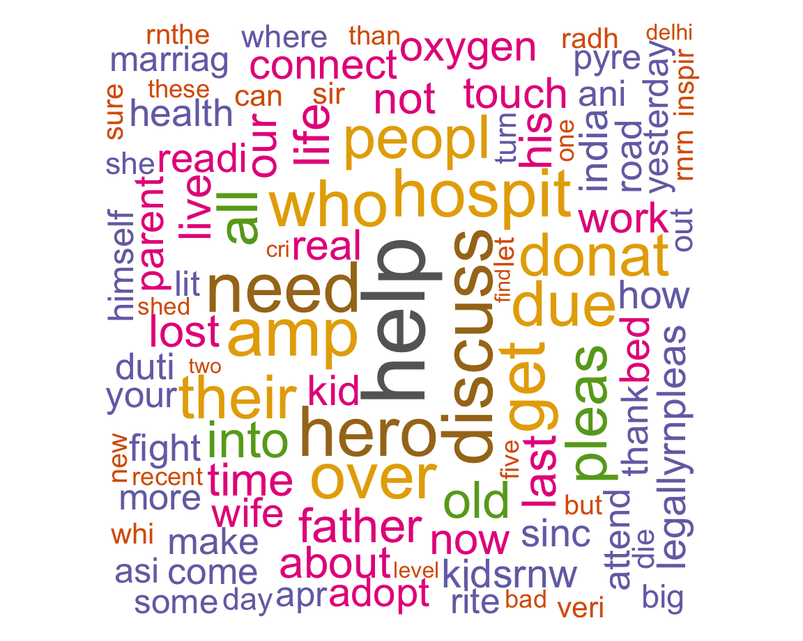
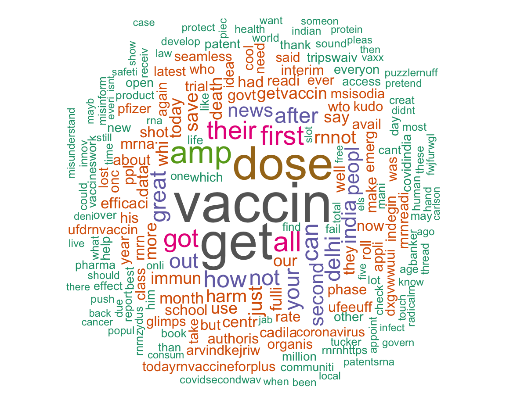
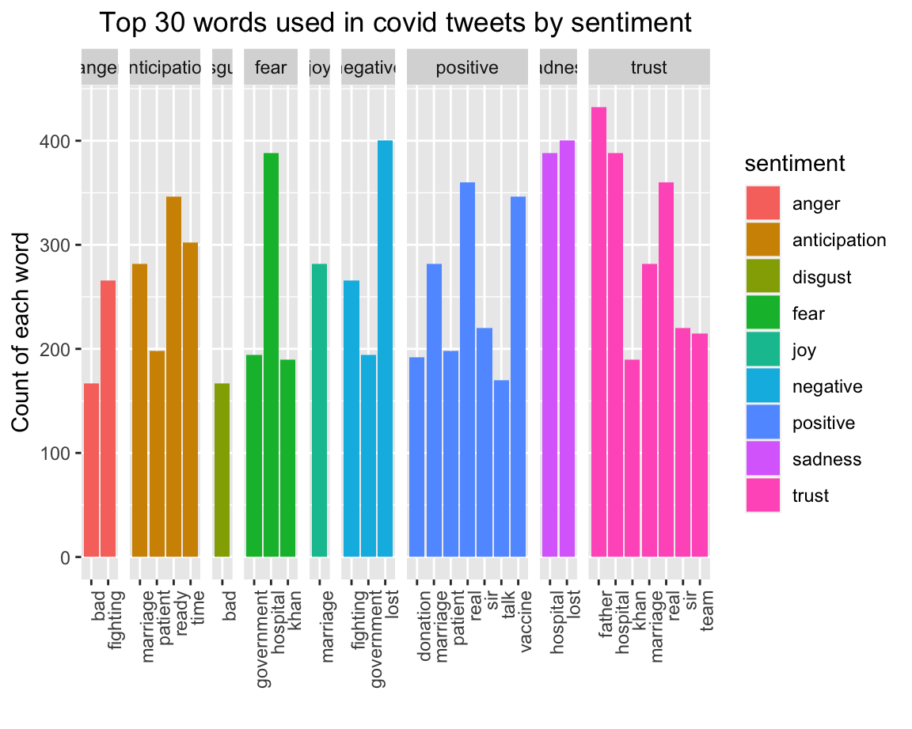
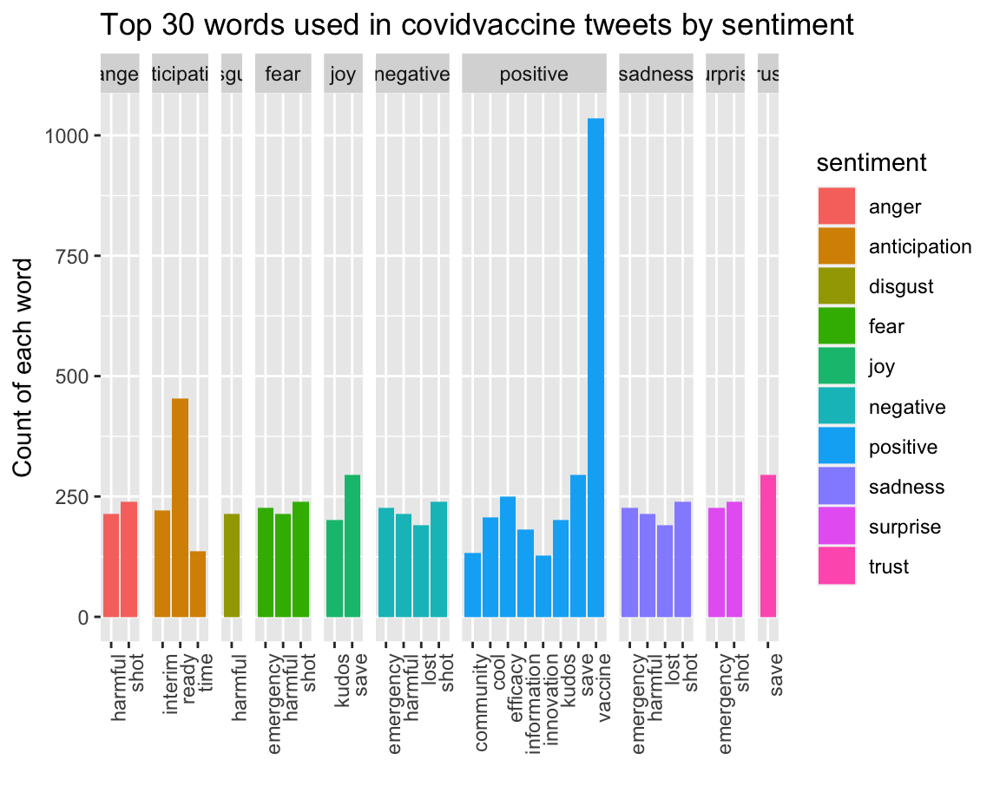
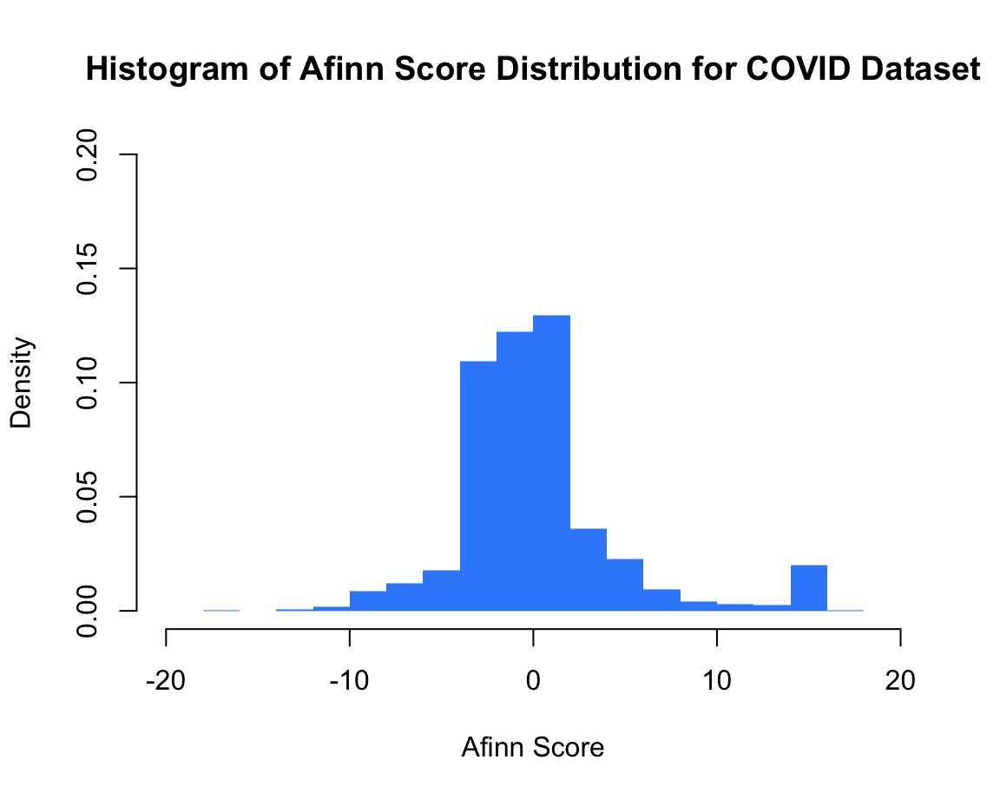
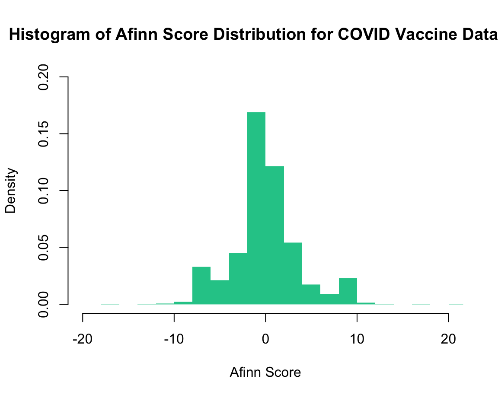

People’s emotional changes during Covid-19
Studying tweets with #Covid and #CovidVaccine
Introduction
In this study, we examine people’s emotional changes during Covid-19 through tweets people posted during the pandemic. We study emotional change because emotions have a special motivational function that can influence and guide behavior in a way that is identical to physiological motivation, and can also serve as a special psychological context to influence the motivational state of behavior.
According to previous KFF statistics, about 4 in 10 adults in the United States reported symptoms of anxiety or depression during the pandemic, up from 1 in 10 adults who reported these symptoms from January to June 2019. This phenomenon indicates that the virus and mental issues continued to hit the entire community during Covid, but the advent of the vaccine in the late pandemic largely mitigated this anxiety. In the following, we will present a comparison of people’s emotions through text mining between tweets posted during the Covid-19 and those posted after the vaccine emerged, and examine people’s emotional state now.
Data Manipulation and Methodology
We extracted in total 10,000 tweets from Twitter, 5000 tweets (in English) hashtagged #covid and 5000 tweets hashtagged #CovidVaccine.
Tiding Data: Once we got the data, we first removed the duplicates because some tweets were #covid and #CovidVaccine at the same time. Second, cleaned up the unnecessary data, leaving only usable data such as text, IDs, retweets, etc.
Preliminary explorations: Then, with the tidy data, we first counted the time frames that people used Twitter to post information on social media by using ggplot function to generate graphs to compare. After that, we moved into assessing the most commonly used words of each hashtag. We first apply the regular expression pattern method of filtering words and numbers (also includes hashtags, @, digits, but not punctuation, then plot words into graphs for comparison. Then, plot word clouds for comparison by a stemming method that gets rid of stop words, punctuation, white space, number and customized words such as “the, https, t.co, with, and” and so on.
Finally, analyze the sentiment of texts. In this step, we conducted sentiment analysis for each hashtag that groups tweet words with the nrc lexicon into 10 sentiments. Then, we calculate the log odds ratio of commonly used words by each hashtag to see how likely a certain word is used by #covid or #CovidVaccine.
# A tibble: 10 x 7
status_id source text created_at retweet_count favorite_count is_retweet
<chr> <chr> <chr> <dttm> <dbl> <dbl> <lgl>
1 x139041367… Twitte… "#VERIFIED b… 2021-05-06 21:10:27 15 0 TRUE
2 x139041366… NatsuE… "Read about … 2021-05-06 21:10:26 1 0 TRUE
3 x139041364… Twitte… "#SOS #Oxyge… 2021-05-06 21:10:19 6 0 TRUE
4 x139038334… Twitte… "This video … 2021-05-06 19:09:56 136 0 TRUE
5 x139039710… Twitte… "@SonuSood\r… 2021-05-06 20:04:37 173 0 TRUE
6 x139041357… Postfi… "Are you ret… 2021-05-06 21:10:02 0 0 FALSE
7 x139041356… Social… "Some parent… 2021-05-06 21:10:00 0 0 FALSE
8 x139041351… Twitte… "#Covid itse… 2021-05-06 21:09:49 5 0 TRUE
9 x139041344… Twitte… "This is a g… 2021-05-06 21:09:32 6 0 TRUE
10 x139041351… Twitte… "Coming up a… 2021-05-06 21:09:49 2 0 TRUE # A tibble: 10 x 7
status_id source text created_at retweet_count favorite_count is_retweet
<chr> <chr> <chr> <dttm> <dbl> <dbl> <lgl>
1 x139039196… Twitte… "I assume #p… 2021-05-06 19:44:10 0 0 FALSE
2 x139039183… Twitte… "Russia auth… 2021-05-06 19:43:41 0 0 FALSE
3 x139039179… Twitte… "The #Seyche… 2021-05-06 19:43:30 42 0 TRUE
4 x139039176… Twitte… "We're into … 2021-05-06 19:43:24 1 0 TRUE
5 x139039176… Twitte… "Please allo… 2021-05-06 19:43:24 1 0 TRUE
6 x139039170… Twitte… "5 new #Covi… 2021-05-06 19:43:10 14 0 TRUE
7 x139039151… Twitte… "I will be s… 2021-05-06 19:42:25 2 0 TRUE
8 x139039139… Twitte… "Had a chanc… 2021-05-06 19:41:55 45 0 TRUE
9 x139039130… Twitte… "All digital… 2021-05-06 19:41:32 0 0 FALSE
10 x139039129… Twitte… "All indian … 2021-05-06 19:41:32 0 0 FALSE What time do the people published tweets?
The preliminary exploration part shows that based on EST time, people (40%) tweets most frequently about #covid at around 1pm. As the night wore on, the number of tweets dwindled. People (14%) tweets the most about #CovidVaccine at around 11am, but there were also a lot of people (almost 12%) tweeted around 6am in the morning.
We infer that there are many official accounts of the news industry and the pharmaceutical industry needs to publish the latest news about vaccines early in the morning in its competitive environments.
Notably, the time periods shown in the two charts are not equal. We believe one of the main factors is the unequal amount of data in the two filtered sets. There are more #covid tweets than #CovidVaccine, so the time period after the #covid stats is more concentrated while the #CovidVaccine time period is more spread out.
Most common words in tweets
Mapping the most frequently tweeted word of both hashtags, the most common word mentioned by #covid is “kids”. Based on checking our graphs and viewing some tweets about kids, we deduct that during the outbreak, the subject of schooling was talked about more by people on social media. Kindergartens and primary schools with more young kids may become the focus of conversation.
The most common word mentioned by #CovidVaccine is “vaccine”, and the next more frequently mentioned word is “vaccinated”. After the advent of vaccines, there is a new social media trend of posted vaccination cards or stickers to show that you are vaccinated. We believe this trend is the main reason for the frequent mentions of these two words.
| word | freq | |
|---|---|---|
| help | help | 909 |
| discuss | discuss | 702 |
| need | need | 691 |
| hero | hero | 686 |
| amp | amp | 673 |
| hospit | hospit | 657 |
| get | get | 640 |
| who | who | 633 |
| over | over | 632 |
| due | due | 612 |
| their | their | 582 |
| peopl | peopl | 578 |
| donat | donat | 571 |
| pleas | pleas | 549 |
| all | all | 536 |
| into | into | 471 |
| old | old | 471 |
| life | life | 449 |
| father | father | 432 |
| last | last | 422 |
| time | time | 407 |
| his | his | 403 |
| lost | lost | 399 |
| our | our | 394 |
| live | live | 390 |
| not | not | 390 |
| about | about | 389 |
| now | now | 384 |
| work | work | 374 |
| touch | touch | 371 |
| oxygen | oxygen | 368 |
| real | real | 365 |
| connect | connect | 363 |
| kid | kid | 362 |
| bed | bed | 354 |
| parent | parent | 349 |
| wife | wife | 348 |
| readi | readi | 345 |
| adopt | adopt | 342 |
| kidsrnw | kidsrnw | 338 |
| legallyrnpleas | legallyrnpleas | 338 |
| india | india | 335 |
| how | how | 334 |
| sinc | sinc | 328 |
| health | health | 319 |
| fight | fight | 312 |
| make | make | 308 |
| thank | thank | 307 |
| duti | duti | 305 |
| road | road | 305 |

| word | freq | |
|---|---|---|
| vaccin | vaccin | 1472 |
| get | get | 1352 |
| dose | dose | 1180 |
| amp | amp | 749 |
| all | all | 632 |
| first | first | 595 |
| their | their | 558 |
| got | got | 555 |
| can | can | 503 |
| how | how | 499 |
| great | great | 466 |
| not | not | 455 |
| your | your | 444 |
| after | after | 440 |
| delhi | delhi | 440 |
| out | out | 425 |
| india | india | 412 |
| peopl | peopl | 394 |
| second | second | 385 |
| news | news | 373 |
| just | just | 365 |
| rnnot | rnnot | 344 |
| save | save | 344 |
| harm | harm | 332 |
| death | death | 305 |
| whi | whi | 301 |
| immun | immun | 299 |
| our | our | 292 |
| more | more | 289 |
| use | use | 288 |
| today | today | 286 |
| getvaccin | getvaccin | 285 |
| say | say | 282 |
| fulli | fulli | 277 |
| data | data | 275 |
| month | month | 271 |
| centr | centr | 266 |
| well | well | 260 |
| had | had | 259 |
| they | they | 259 |
| shot | shot | 251 |
| efficaci | efficaci | 250 |
| govt | govt | 241 |
| about | about | 240 |
| now | now | 240 |
| make | make | 238 |
| mrna | mrna | 238 |
| ppl | ppl | 238 |
| school | school | 237 |
| roll | roll | 235 |

The word cloud analysis shows similar results on #CovidVaccine as it in the most common word that we mentioned above. However, the word cloud analysis in #covid yielded the word “help”. This result corresponds to the situation at the beginning of the outbreak when people did not know how to deal with the COVID. There were tweets from individuals and organizations seeking help, and also offering up.
The sentiment analysis of #covid shows stronger sentiment of “negative”, “fear”, and “sadness”. However, to our surprise, the strongest sentiment of #covid is “trust”. Most people trust parents (especially father), trust hospitals, and trust marriage. Although many negative emotions were present, at the same time “positive” emotions were also strongly talked about in donations, vaccines, and the public. In general, the #covid tweet contains a wide range of emotions.


How likely is a word coming from from COVID dataset or COVID vaccine dataset (by word or sentiment)?
The sentiment analysis of #covid shows stronger sentiment of “negative”, “fear”, and “sadness”. However, to our surprise, the strongest sentiment of #covid is “trust”. Most people trust parents (especially father), trust hospitals, and trust marriage. Although many negative emotions were present, at the same time “positive” emotions were also strongly talked about in donations, vaccines, and the public. In general, the #covid tweet contains a wide range of emotions.
The #CovidVaccine tweets are very different in that the “positive” sentiments far outweighs the other sentiments. It is not difficult to see that this positive sentiment is mainly expressed in relation to vaccines.
Then, we calculate the log odd ratio of commonly used words by each hashtag and found that frequent words like “marriage”, “heroes”, “adopt”, and “legally” are more likely to be spoken by people who hashtag #covid, while “authorisation”, “applies”, and “indigenous” are more likely to be spoken by people who hashtag #CovidVaccine.


Afinn is the simplest yet popular lexicons used for sentiment analysis developed by Finn Årup Nielsen. It contains 3300+ words with a polarity score associated with each word. The AFINN lexicon assigns words with a score between -5 and 5, with negative scores indicating negative sentiment and positive scores indicating positive sentiment.
According to the histogram, we can notice that the COVID vaccine dataset has a more centralized Afinn score, which means people’s sentiments in their tweets about COVID vaccine are more similar. The most common Afinn scores are close to 0. This may show that people have a neutral attitude towards COVID vaccine.
COVID dataset has a relatively dispersed Afinn score distribution, while the most common scores are still close to 0. However, it should be noted that there are significantly more people showing positive sentiments in their tweets about COVID. Considering that people are more experienced facing the public health emergency, we can infer that this may be due to the distribution of vaccines and the more efficient and effective precaution actions and disease control strategies.
Discussion:
In general, we can see that people have a relatively positive attitude toward COVID vaccine, and this may further lead to a positive attitude towards the COVID pandemic (i.e. the control and the end of the pandemic). However, we should also notice that it has a higher possibility that the negative words such as sadness, fear, anger, and disgust are from COVID vaccine related tweets, for example, anti-vaxxers and report of side-effects, which demonstrated that more vaccine propaganda and science popularization may be needed concerning the importance of public vaccination, and influence people’s behavior through emotional assistance in ending the pandemic.
Limitations:
The first limitation in this project is the limitation of data. We only extracted English tweets as the subject of our study because it is the most used language in tweets and has a relatively large influence. But this may not convey the change in people’s emotions during the pandemic at a global level. Meanwhile, we only extracted 5000 tweets for each dataset, which is very little compared to the number of tweets about COVID and COVID vaccines every day around the world. This will also impact the representativeness of the conclusion When comparing the time people tweeted we found that the comparison results generated after converting all the data to EST may be different from reality due to the different time zones and the lack of large Twitter data.
Second, the sentiment analysis that we use during the project is one of the most obvious ways of data analysis with unlabelled text data, however, the method is based on the literal meaning (definition from the dictionary) to determine the mood of a word. If the buzzwords during the pandemic expresses a meaning opposite to the literal meaning, then there will be analysis errors.
This is the final project for course BDS 516 “Data Science And Quantitative Modeling” at the University of Pennsylvania.
Instructor: Alex Shpenev
Date: 2021/05/10
This project is attributed to the following persons:
Wenlu Yuan: Organizing code in R and Python
Yuqi Zhao: Organizing website creation and code in R for dashboard
Pu Lou: Organizing text writing and data mining